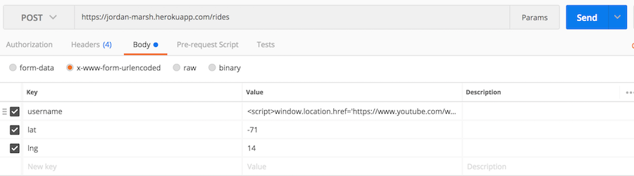
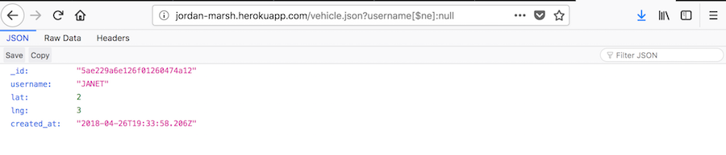
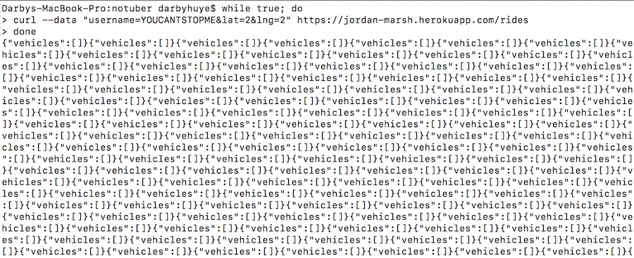

My job was to penetrate, test, and analyze my partners assignment 2 and assignment 3 to find vulnerabilities. After identifying these security flaws, I provided my client with advice to resolve the issues.
I began with analyzing my client's code in sublime. Once I identified possible vulnerabilities, I used postman to send requests. I used Firefox to tamper with user input. I also used bash in order to run shell scripts that would send requests repeatedly.
My client does not verify that the user's input is not malicious. For example, a user can insert Java Scipt code as their username. Instead of parsing this input to remove the script tag, the user stores it as a variable and the malicious code is executed. This is called a Cross Site Scripting attack. Also, my client does not limit the number of requests a user can make. It is easy for a user to make infinite requests therefore exhausting resources for other users. This can cause the server to crash. This is called a Denial of Service attack. Also, my client uses variables that hold user input throughout the program. If the user's input was malicious, then this code can be executed later on resulting in important information leaks. This is called an injection attack. These issues can be easily resolved by sanitizing user input in the various ways outlined below.
Where: POST (rides)
My client has cross site scripting vulnerabilites. I was able to send malicious scripts as input using postman. First, I sent a script containing an alert message as the input in the username field. After that, I sent a different post request with the username containing code that redirects the user to a youtube video, as shown below:
The result of the post above was that the page was redirected here:
Solution: since this issue is SEVERE, it needs to be resolved. A way to resolve this issue is by sanitizing user input. For example, my client can parse the username in the request body before inserting it to the database. If the username has the <"script"> tag, then do not insert it into the database.
Where: GET (vehicles)
My client does not sanitize their input. For example, if I try to get a vehicle and I insert the username as being not equal to null, I will get a vehicle stored in the database, as shown below.
Solution: Sanitize user input! This issue is SEVERE because a user does not need to know anything about the information stored in the database in order to acess the information. To fix this, there is a sanitize function (when using mongodb) that strips all input of keys beginning with "$" to prevent malicious input.
Where: POST (rides)
I preformed an Denial of Service (DoS) attack on my clients server. Even though my client updates the information in their database that has the same username, this update function will be called infinitely (until I quit the loop). If I were to allow the loop to run for a long period of time, I believe it would deny all other users from making requests. The system would be overloaded with requests which would temporarily deny service to its users. I used a loop in terminal to make infinite requests as pictured below:
Solution: This issue is bad, but not severe since the user would not be getting any information from the database, just making it so other users cannot use it. However, there is an easy fix to this issue. One solution would be to use the express rate limit module. This is used to limit repeated requests.
After this assignment, I am now aware of how easy it is to create servers that are insecure. I have seen how easy it is to hack servers. Also, I now how simple it is to resolve these issues. If I ever make a server again in the future, I will be sure to fix as many vulernabilities as possible now that I am aware of them.
As for costs, security flaws can be extremely expensive for both the user and provider of a service. If someone were to store their password, social security number, or any other valuable information in an insecure server, this could be hacked easily. The risks associated with using or providing an insecure service are severe and never worth it.
https://zanon.io/posts/nosql-injection-in-mongodb
http://www.veracode.com/security/xss
https://www.pluralsight.com/blog/it-ops/ethical-hacking-how-to-create-a-dos-attack
https://www.cs.tufts.edu/comp/40/labs/sh-lab
https://www.npmjs.com/package/express-rate-limit